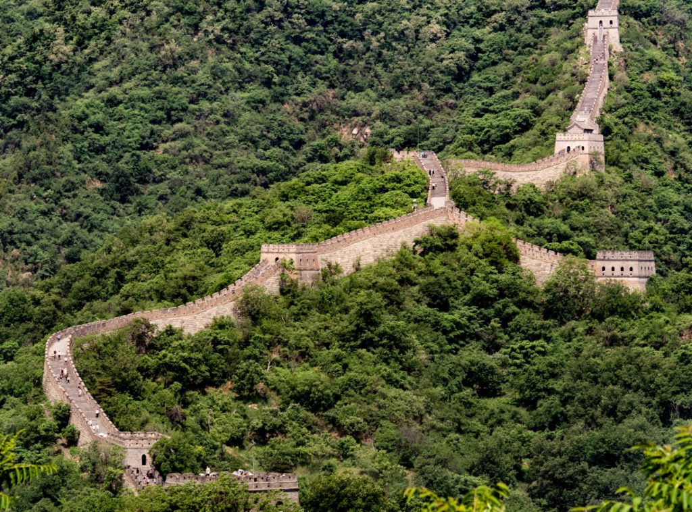

On peut difficilement contester la place de la Grande Muraille de Chine dans la liste des 7 merveilles du monde moderne. Cet ensemble de fortifications miliaires chinoises est en effet le plus grand (en longueur et en surface), et plus lourd, monument jamais construit par l’Homme. Selon les estimations, sa longueur varie entre 6 700 et 8 850 kilomètres ! La construction de ce prodige architectural remonte à environ 2000 ans et est le produit de plusieurs dynasties chinoises, notamment la dynastie Ming.
La Grande Muraille de Chine se situe au nord du pays. Elle le traverse en partant de la frontière avec la côte au nord de Pékin, jusqu’au désert de Gobi. Son but était de délimiter et défendre la frontière nord de la Chine, notamment lorsque les différentes parties de la muraille furent reliées pour repousser les Huns. Aujourd’hui, elle attire des millions de visiteur·se·s chaque année. Pour en faire partie, le plus simple est de passer par Pékin ; selon votre itinéraire vous pourrez visiter différentes sections de la Muraille, dont les splendides sites de Badaling, Mutianyu et Simatai